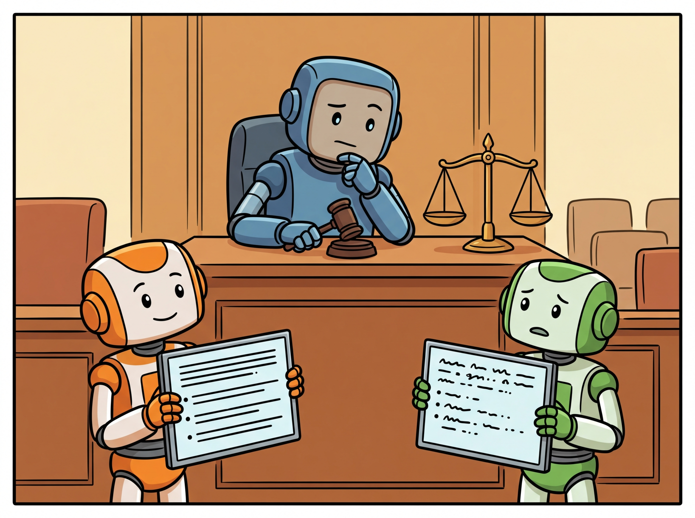

"A two percent improvement without a confidence interval is just a two percent hope."
Eval AI Agent

Prerequisites
This section builds on the evaluation foundations from Section 29.1. Familiarity with LLM capabilities from Section 07.1 and prompt engineering from Section 11.1 helps with understanding LLM-as-judge evaluation patterns.
Claiming that Model A outperforms Model B on a benchmark means nothing without statistical evidence. LLM evaluations are inherently noisy: outputs vary with random seeds, prompt phrasing, and sampling temperature. A 2% accuracy difference on 100 test examples could easily be due to chance. This section teaches you to design experiments that produce reliable, reproducible conclusions by applying bootstrap confidence intervals, paired statistical tests, effect size reporting, and principled ablation study design. Building on the metrics from Section 29.1, it also covers the critical problem of benchmark contamination and how to detect it.
1. Why Statistical Rigor Matters for LLM Evaluation Basic
Traditional software testing is deterministic: a function either returns the correct value or it does not. LLM evaluation is fundamentally different because the same prompt can produce different outputs across runs (when temperature > 0), different models may perform differently on different subsets of a benchmark, and small benchmark sizes amplify sampling noise. Without statistical rigor, you risk deploying a model based on a performance difference that was nothing more than random fluctuation.
A surprising number of published LLM benchmarks use fewer than 200 test examples. At that size, a 95% confidence interval on accuracy spans roughly plus or minus 7 percentage points, which means many "state-of-the-art" claims are statistically indistinguishable from a coin flip of luck.
The core principle is straightforward: every evaluation result should come with a measure of uncertainty. A point estimate like "Model A achieves 78.3% accuracy" is incomplete without a confidence interval such as "78.3% ± 2.1% (95% CI)." When comparing two systems, you need a formal test of whether the observed difference is statistically significant.
Common Statistical Mistakes in LLM Papers
- No confidence intervals: Reporting a single accuracy number without any uncertainty quantification
- Inappropriate independence assumptions: Using unpaired tests when both models were evaluated on the same examples
- Multiple comparisons without correction: Comparing many model variants without adjusting for the increased chance of false positives
- Cherry-picked seeds: Running experiments with many random seeds and reporting only the best result
- Ignoring effect size: Claiming a "significant" improvement that is too small to matter in practice
Non-determinism makes everything harder. Classical ML evaluation assumes deterministic inference: given the same input, the model always produces the same output. LLMs with temperature > 0 violate this assumption. The same prompt can yield different answers on consecutive calls, which means a single evaluation run captures only one sample from a distribution of possible outputs. This is why LLM evaluation requires statistical machinery (confidence intervals, effect sizes, paired tests) that would be overkill for a deterministic classifier. If you skip the statistics, you are essentially making deployment decisions based on a single roll of the dice.
2. Bootstrap Confidence Intervals Intermediate
The bootstrap is a resampling method that estimates the sampling distribution of a statistic by repeatedly drawing samples (with replacement) from the observed data. It requires no distributional assumptions, which makes it ideal for LLM evaluation metrics that may have unusual distributions (skewed, bounded, multimodal).
The procedure is simple: given n evaluation results, draw B bootstrap samples of size n (with replacement), compute the metric on each sample, and use the distribution of bootstrapped metrics to construct a confidence interval. The percentile method takes the 2.5th and 97.5th percentiles for a 95% confidence interval. Code Fragment 29.2.1 below puts this into practice.
Input: scores S = [s1, ..., sn], metric function f, resamples B, confidence level α
Output: point estimate, (lower, upper) confidence interval
1. Compute point estimate: θ̂ = f(S)
2. for b = 1 to B:
a. Draw S*b = sample n values from S with replacement
b. Compute θ*b = f(S*b)
3. Sort {θ*1, ..., θ*B}
4. lower = percentile(θ*, 100 · α/2)
upper = percentile(θ*, 100 · (1 − α/2))
return θ̂, (lower, upper)
# implement bootstrap_ci
# Key operations: results display
import numpy as np
from typing import Callable
def bootstrap_ci(
scores: list[float],
metric_fn: Callable = np.mean,
n_bootstrap: int = 10_000,
confidence: float = 0.95,
seed: int = 42
) -> dict:
"""Compute bootstrap confidence interval for any metric.
Args:
scores: Per-example scores (e.g., accuracy per question)
metric_fn: Aggregation function (mean, median, etc.)
n_bootstrap: Number of bootstrap resamples
confidence: Confidence level (e.g., 0.95 for 95% CI)
seed: Random seed for reproducibility
"""
rng = np.random.default_rng(seed)
scores = np.array(scores)
n = len(scores)
# Generate all bootstrap samples at once for efficiency
boot_indices = rng.integers(0, n, size=(n_bootstrap, n))
boot_stats = np.array([metric_fn(scores[idx]) for idx in boot_indices])
alpha = 1 - confidence
lower = np.percentile(boot_stats, 100 * alpha / 2)
upper = np.percentile(boot_stats, 100 * (1 - alpha / 2))
return {
"point_estimate": float(metric_fn(scores)),
"ci_lower": float(lower),
"ci_upper": float(upper),
"confidence": confidence,
"n_bootstrap": n_bootstrap,
"std_error": float(np.std(boot_stats))
}
# Example: binary accuracy scores from a benchmark
accuracy_scores = [1,1,0,1,1,1,0,1,0,1,1,1,0,1,1,1,0,1,1,1,
1,0,1,1,1,1,0,1,1,0,1,1,1,0,1,1,1,1,0,1]
result = bootstrap_ci(accuracy_scores)
print(f"Accuracy: {result['point_estimate']:.3f}")
print(f"95% CI: [{result['ci_lower']:.3f}, {result['ci_upper']:.3f}]")
print(f"Standard Error: {result['std_error']:.4f}")For standard confidence intervals, 10,000 bootstrap resamples are sufficient. For more precise p-values or very narrow confidence intervals, consider 50,000 or 100,000 resamples. The computation is fast because each resample only involves indexing into an array, not re-running the model. Figure 29.2.1 illustrates the bootstrap procedure.
3. Paired Statistical Tests Intermediate
When comparing two models, the key question is whether the observed difference in performance is statistically significant. Because both models are evaluated on the same test examples, you should use paired tests that account for the correlation between results on each example. Paired tests are more powerful than unpaired tests because they eliminate example-level variance.
McNemar's Test for Binary Outcomes
McNemar's test is the standard choice when evaluation outcomes are binary (correct or incorrect). It focuses on the discordant pairs: examples where the two models disagree. If Model A gets 20 examples right that Model B gets wrong, and Model B gets 8 examples right that Model A gets wrong, McNemar's test determines whether this 20 vs. 8 imbalance is statistically significant. Code Fragment 29.2.2 below puts this into practice.
# implement mcnemar_test
# Key operations: results display, evaluation logic
from scipy import stats
import numpy as np
def mcnemar_test(model_a_correct: list[bool], model_b_correct: list[bool]) -> dict:
"""McNemar's test for comparing two models on the same examples.
Focuses on discordant pairs (examples where models disagree).
"""
a = np.array(model_a_correct)
b = np.array(model_b_correct)
# Count the four outcome types
both_correct = np.sum(a & b)
both_wrong = np.sum(~a & ~b)
a_only = np.sum(a & ~b) # A correct, B wrong
b_only = np.sum(~a & b) # B correct, A wrong
# McNemar's test with continuity correction
if a_only + b_only == 0:
return {"message": "No discordant pairs; models agree on all examples"}
chi2 = (abs(a_only - b_only) - 1) ** 2 / (a_only + b_only)
p_value = 1 - stats.chi2.cdf(chi2, df=1)
return {
"contingency": {
"both_correct": int(both_correct),
"a_only_correct": int(a_only),
"b_only_correct": int(b_only),
"both_wrong": int(both_wrong)
},
"chi2_statistic": round(chi2, 4),
"p_value": round(p_value, 6),
"significant_at_005": p_value < 0.05,
"model_a_accuracy": round(np.mean(a), 4),
"model_b_accuracy": round(np.mean(b), 4)
}
# Simulate evaluation results for 200 test examples
np.random.seed(42)
model_a = np.random.binomial(1, 0.82, size=200).astype(bool)
model_b = np.random.binomial(1, 0.75, size=200).astype(bool)
result = mcnemar_test(model_a.tolist(), model_b.tolist())
for key, val in result.items():
print(f" {key}: {val}")Paired Bootstrap Test
For continuous scores (such as BERTScore, ROUGE F1, or judge ratings), the paired bootstrap test computes a confidence interval on the difference in metric values. By resampling paired differences, you directly estimate whether the gap between two systems is reliably different from zero. Code Fragment 29.2.3 below puts this into practice.
# implement paired_bootstrap_test
# Key operations: results display
def paired_bootstrap_test(
scores_a: list[float],
scores_b: list[float],
n_bootstrap: int = 10_000,
seed: int = 42
) -> dict:
"""Paired bootstrap test for comparing two systems.
Tests whether the difference in mean scores is significant.
"""
rng = np.random.default_rng(seed)
a = np.array(scores_a)
b = np.array(scores_b)
diffs = a - b # per-example differences
n = len(diffs)
observed_diff = np.mean(diffs)
# Bootstrap the mean difference
boot_diffs = []
for _ in range(n_bootstrap):
sample = rng.choice(diffs, size=n, replace=True)
boot_diffs.append(np.mean(sample))
boot_diffs = np.array(boot_diffs)
# Two-sided p-value: fraction of bootstrap diffs on wrong side of zero
if observed_diff >= 0:
p_value = 2 * np.mean(boot_diffs <= 0)
else:
p_value = 2 * np.mean(boot_diffs >= 0)
ci_lower = np.percentile(boot_diffs, 2.5)
ci_upper = np.percentile(boot_diffs, 97.5)
# Cohen's d effect size
cohens_d = observed_diff / np.std(diffs)
return {
"mean_diff": round(observed_diff, 4),
"ci_95": (round(ci_lower, 4), round(ci_upper, 4)),
"p_value": round(p_value, 4),
"cohens_d": round(cohens_d, 4),
"significant": p_value < 0.05
}
# Example: BERTScore F1 values for two models on same 50 examples
np.random.seed(42)
scores_a = np.random.normal(0.88, 0.05, 50)
scores_b = np.random.normal(0.85, 0.06, 50)
result = paired_bootstrap_test(scores_a.tolist(), scores_b.tolist())
print(f"Mean difference (A - B): {result['mean_diff']}")
print(f"95% CI: {result['ci_95']}")
print(f"p-value: {result['p_value']}")
print(f"Cohen's d: {result['cohens_d']}")
print(f"Significant at p < 0.05: {result['significant']}")Choosing the Right Test
| Scenario | Test | When to Use | Key Assumption |
|---|---|---|---|
| Binary outcomes | McNemar's test | Correct/incorrect classification | Same test set for both models |
| Continuous scores, paired | Paired bootstrap | BERTScore, ROUGE, judge ratings | Same test set for both models |
| Continuous scores, paired, normal | Paired t-test | Large sample sizes (n > 30) | Approximately normal differences |
| Multiple system comparison | Friedman test + post-hoc | Ranking 3+ models | Same test set for all models |
| Ordinal ratings | Wilcoxon signed-rank | Human ratings on Likert scale | Symmetric difference distribution |
When comparing k model variants, the probability of at least one false positive grows rapidly. With 10 comparisons at α = 0.05, you have a 40% chance of at least one false positive. Apply the Bonferroni correction (divide α by the number of comparisons) or, better, use the Holm-Bonferroni method, which is less conservative while still controlling the family-wise error rate.
4. Effect Sizes Intermediate
Statistical significance tells you whether a difference exists; effect size tells you whether it matters. A p-value of 0.001 with an effect size of 0.02 means the difference is real but trivially small. Always report both significance and effect size.
Cohen's d is the most common effect size measure. It expresses the mean difference in units of standard deviation. The conventional interpretation is: d = 0.2 (small), d = 0.5 (medium), d = 0.8 (large). For LLM evaluation, consider the practical significance in your specific context: a 0.5% accuracy improvement may be significant for a medical diagnosis system but irrelevant for a chatbot. Figure 29.2.2 provides a visual guide to Cohen's d interpretation.
5. Seed Management and Reproducibility Advanced
Random seeds affect LLM evaluation in multiple ways: data shuffling, few-shot example selection, sampling temperature, dropout at inference (for some models), and bootstrap resampling. Proper seed management ensures that results can be reproduced exactly and that reported variance reflects true model uncertainty rather than implementation randomness.
# Define ExperimentConfig; implement get_eval_seeds, run_multi_seed_evaluation
# Key operations: results display, prompt construction, evaluation logic
import random
import numpy as np
import json
from dataclasses import dataclass, asdict
from typing import Optional
@dataclass
class ExperimentConfig:
"""Configuration for a reproducible LLM experiment."""
model_name: str
prompt_template: str
temperature: float = 0.0
max_tokens: int = 512
eval_seed: int = 42 # seed for data shuffling/sampling
bootstrap_seed: int = 123 # seed for statistical analysis
num_eval_seeds: int = 5 # number of seeds for variance estimation
def get_eval_seeds(self) -> list[int]:
"""Generate deterministic evaluation seeds."""
rng = np.random.default_rng(self.eval_seed)
return rng.integers(0, 2**31, size=self.num_eval_seeds).tolist()
def run_multi_seed_evaluation(config: ExperimentConfig, eval_fn) -> dict:
"""Run evaluation across multiple seeds and report aggregated results."""
seeds = config.get_eval_seeds()
all_results = []
for seed in seeds:
random.seed(seed)
np.random.seed(seed)
result = eval_fn(config, seed=seed)
all_results.append(result)
print(f" Seed {seed}: accuracy = {result['accuracy']:.4f}")
accuracies = [r["accuracy"] for r in all_results]
return {
"mean_accuracy": round(np.mean(accuracies), 4),
"std_accuracy": round(np.std(accuracies), 4),
"min_accuracy": round(min(accuracies), 4),
"max_accuracy": round(max(accuracies), 4),
"seeds_used": seeds,
"config": asdict(config)
}When using temperature = 0 with the OpenAI API, outputs are mostly deterministic but not perfectly so due to floating-point non-determinism in GPU computations. For truly reproducible results, also set seed in the API request and check the system_fingerprint in the response to verify that the same backend was used. Even then, provider updates can change behavior silently.
6. Ablation Study Design Advanced
An ablation study systematically removes or modifies components of a system to measure their individual contribution. In LLM applications, ablation targets include prompt components (system message, few-shot examples, chain-of-thought instructions), retrieval parameters (chunk size, top-k, reranking), model settings (temperature, max tokens), and architectural choices (model size, fine-tuning vs. prompting).
The key principle is to change exactly one variable at a time while holding everything else constant. This isolation is what distinguishes a rigorous ablation from casual experimentation. Figure 29.2.3 shows the ablation study results. Code Fragment 29.2.5 below puts this into practice.
# Define AblationConfig; implement run_ablation_study
# Key operations: prompt construction, evaluation logic
from dataclasses import dataclass
from typing import Optional
import json
@dataclass
class AblationConfig:
"""Configuration for one ablation variant."""
name: str
use_system_prompt: bool = True
use_few_shot: bool = True
use_cot: bool = True
use_reranker: bool = True
model: str = "gpt-4o"
def run_ablation_study(eval_fn, test_cases: list, seed: int = 42) -> list[dict]:
"""Run a structured ablation study with one variable removed at a time."""
configs = [
AblationConfig(name="Full System (Baseline)"),
AblationConfig(name="No System Prompt", use_system_prompt=False),
AblationConfig(name="No Few-Shot", use_few_shot=False),
AblationConfig(name="No Chain-of-Thought", use_cot=False),
AblationConfig(name="No Reranker", use_reranker=False),
AblationConfig(name="Smaller Model", model="gpt-4o-mini"),
]
baseline_score = None
results = []
for config in configs:
scores = eval_fn(config, test_cases, seed=seed)
mean_score = sum(scores) / len(scores)
if baseline_score is None:
baseline_score = mean_score
ci = bootstrap_ci(scores, seed=seed)
delta = mean_score - baseline_score
delta_pct = (delta / baseline_score) * 100 if baseline_score else 0
results.append({
"variant": config.name,
"score": round(mean_score, 4),
"ci_95": (ci["ci_lower"], ci["ci_upper"]),
"delta": round(delta, 4),
"delta_pct": round(delta_pct, 2)
})
return results7. Benchmark Contamination Detection Advanced
Benchmark contamination occurs when evaluation data leaks into a model's training corpus. Because LLMs are trained on massive web scrapes, popular benchmarks like MMLU, GSM8K, and HumanEval have a high risk of appearing in training data. When a model has memorized the answers, its benchmark score dramatically overestimates its true capability on novel problems. Code Fragment 29.2.6 below puts this into practice.
Detection Strategies
- N-gram overlap analysis: Check if verbatim benchmark questions appear in known training data dumps
- Perturbation testing: Slightly rephrase benchmark questions and check if accuracy drops sharply (a sign of memorization)
- Membership inference: Use the model's log-probabilities to determine if it assigns unusually high probability to benchmark text
- Canary strings: Insert unique, identifiable strings into evaluation data and check if models reproduce them
# implement perturbation_contamination_test, evaluate_set
# Key operations: evaluation logic
import numpy as np
from typing import Callable
def perturbation_contamination_test(
model_fn: Callable,
original_questions: list[dict],
perturbed_questions: list[dict],
threshold: float = 0.15
) -> dict:
"""Detect benchmark contamination via perturbation analysis.
If accuracy drops sharply on minor rephrasing, the model may
have memorized the original questions rather than learned the skill.
Args:
model_fn: callable that takes a question and returns an answer
original_questions: list of {'question': str, 'answer': str}
perturbed_questions: rephrased versions with same answers
threshold: max acceptable accuracy drop (larger drops = contamination)
"""
def evaluate_set(questions):
correct = 0
for q in questions:
prediction = model_fn(q["question"])
if prediction.strip().lower() == q["answer"].strip().lower():
correct += 1
return correct / len(questions)
orig_acc = evaluate_set(original_questions)
pert_acc = evaluate_set(perturbed_questions)
drop = orig_acc - pert_acc
return {
"original_accuracy": round(orig_acc, 4),
"perturbed_accuracy": round(pert_acc, 4),
"accuracy_drop": round(drop, 4),
"contamination_suspected": drop > threshold,
"message": (
"Contamination likely: large accuracy drop on minor rephrasing"
if drop > threshold
else "No strong contamination signal detected"
)
}Research has shown that many popular benchmarks appear in the training data of major LLMs. The problem is especially severe for benchmarks released before 2023, which have had years to propagate across the web. When evaluating models for deployment decisions, always supplement standard benchmarks with custom evaluation sets that you know are not publicly available.
📝 Knowledge Check
Show Answer
Show Answer
Show Answer
Show Answer
Show Answer
Who: Applied ML team at a legal tech company comparing two prompt strategies for contract summarization
Situation: The team rewrote the summarization prompt to include chain-of-thought reasoning. Initial tests on 20 examples showed a 15% improvement in summary quality, and stakeholders wanted to ship immediately.
Problem: The 20-example result had a bootstrap confidence interval of [2%, 28%], meaning the true improvement could be anywhere from negligible to substantial. The team needed to determine whether the improvement was real and practically meaningful before deploying.
Dilemma: Running a full evaluation on 500 examples with human annotators would cost $5,000 and take 2 weeks. Shipping based on 20 examples risked deploying a change that might not actually help (or could even hurt edge cases).
Decision: The team ran a properly powered paired evaluation: 200 examples scored by both prompts on the same inputs, using McNemar's test for binary quality judgments and paired bootstrap for continuous scores.
How: They computed the minimum sample size needed (power analysis at 80% power, alpha = 0.05) for the expected effect size. Both prompts processed the same 200 contracts. Three annotators scored each output, with inter-annotator agreement measured via Cohen's kappa. They reported both p-values and Cohen's d effect size.
Result: The paired test confirmed a statistically significant improvement (p = 0.003) with a medium effect size (Cohen's d = 0.52). The 95% confidence interval narrowed to [7%, 18%]. The team deployed with confidence, and production metrics confirmed the evaluation results.
Lesson: Paired statistical tests on shared examples, combined with effect size reporting and proper power analysis, prevent both premature deployment of ineffective changes and unnecessary delays of genuine improvements.
Every time a user reports a bad output, add that input (and the correct output) to your evaluation set. Over time, this creates a regression test suite that specifically covers your application's real weak spots.
Key Takeaways
- Always report confidence intervals. A point estimate without uncertainty quantification is incomplete. Use bootstrap confidence intervals when you cannot assume a normal distribution.
- Use paired tests for model comparison. When both models are evaluated on the same examples, paired tests (McNemar's for binary, paired bootstrap for continuous) are more powerful and more appropriate than unpaired alternatives.
- Report effect sizes alongside p-values. Statistical significance tells you a difference exists; effect size (Cohen's d) tells you whether it matters in practice. Both are necessary for informed decisions.
- Manage seeds systematically. Fix seeds for reproducibility, run multiple seeds for variance estimation, and never cherry-pick the best seed. Document all seeds in your experiment configuration.
- Design ablations with single-variable isolation. Change one component at a time to measure its individual contribution. Use the same test set, seeds, and evaluation protocol across all ablation variants.
- Assume contamination until proven otherwise. Supplement standard benchmarks with custom, private evaluation sets. Use perturbation testing to detect memorization in public benchmarks.
Open Questions in Statistical Evaluation (2024-2026):
- Adaptive benchmarking: Item Response Theory (IRT) methods are being adapted to create adaptive LLM benchmarks that estimate model ability with fewer test items by selecting questions based on previous answers, similar to computerized adaptive testing in education.
- Contamination-resistant evaluation: Beyond perturbation testing, researchers are exploring cryptographic approaches to benchmark integrity where test questions are generated on-demand from secret seeds, making pre-training contamination impossible.
- Multi-objective evaluation: Pareto-optimal evaluation frameworks (2024-2025) help navigate the tradeoff between multiple metrics (quality, cost, latency, safety) without collapsing them into a weighted sum.
Explore Further: Implement a paired bootstrap comparison between two models on 200+ examples, then visualize how the confidence interval width changes as you increase sample size from 50 to 500.
Exercises
Explain why bootstrap resampling is preferred over parametric confidence intervals for LLM evaluation. Under what conditions would the bootstrap approach fail?
Answer Sketch
Bootstrap makes no assumptions about the distribution of scores, which is important because LLM evaluation scores (accuracy, preference rates) often follow non-normal distributions. You resample with replacement from the test set, compute the metric for each resample, and use the percentiles of the resampled distribution. It fails when the sample size is too small (fewer than 30 examples) or when the data has strong dependencies (e.g., multi-turn conversations where examples are not independent).
Two models are evaluated on the same 200-example test set. Explain why a paired test (such as McNemar's test) is more appropriate than an unpaired test (such as a two-sample proportion test). What assumption does the paired test relax?
Answer Sketch
A paired test exploits the fact that both models answer the same questions. Some questions are easy (both models get them right) and some are hard (both get them wrong). A paired test focuses on the "discordant" pairs where only one model is correct. This reduces variance and increases statistical power. An unpaired test treats the two sets of scores as independent samples, ignoring this pairing structure and requiring a larger sample for the same power.
You compare 10 different prompt variants on a 500-example test set. Using a significance level of 0.05, what is the probability of at least one false positive if you run all 45 pairwise comparisons without correction? Name two correction methods and their tradeoffs.
Answer Sketch
With 45 independent tests at alpha=0.05, the probability of at least one false positive is 1 - (0.95)^45, which is approximately 90%. Bonferroni correction divides alpha by the number of tests (0.05/45 = 0.0011), which is simple but very conservative. Benjamini-Hochberg (FDR) controls the expected proportion of false positives rather than the family-wise error rate, offering more power at the cost of allowing some false positives.
Model A scores 82.1% and Model B scores 81.5% on a benchmark. The difference is statistically significant (p=0.01). Should you switch to Model A? Explain the role of effect size in this decision.
Answer Sketch
Statistical significance means the difference is unlikely due to chance, but a 0.6 percentage point improvement may be practically meaningless. Effect size (such as Cohen's d) measures the magnitude of the difference in standardized units. If the effect size is negligible (d less than 0.2), the improvement is real but too small to justify switching costs, increased complexity, or other tradeoffs. Always report both statistical significance and practical significance.
Write a Python function bootstrap_ci(scores, n_resamples=10000, ci=0.95) that computes a bootstrap confidence interval for the mean of a list of evaluation scores. Test it on a sample dataset.
Answer Sketch
Use numpy.random.choice(scores, size=len(scores), replace=True) inside a loop for n_resamples iterations. Compute the mean of each resample. Sort the resampled means and take the percentiles at (1-ci)/2 and 1-(1-ci)/2. For a 95% CI with 10,000 resamples, this gives the 2.5th and 97.5th percentiles. Verify by running on known distributions where the analytical CI is available.
What Comes Next
In the next section, Section 29.3: RAG & Agent Evaluation, we focus on evaluating RAG and agent systems, which require specialized metrics beyond simple text quality.